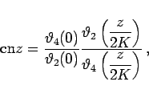

Zur Berechnung der JACOBIschen Funktionen verwendet man die Thetafunktionen
| (14.111b) |
| (14.111c) |
Ist |q|<1 (q komplex), dann konvergiern die Reihen (14.111a) bis (14.111d) für alle komplexen Argumente  . Bei konstantem q verwendet man häufig die Abkürzungen
. Bei konstantem q verwendet man häufig die Abkürzungen
| (14.112) |
Damit haben die JACOBIschen Funktionen die folgenden Darstellungen:
| (14.113a) |
|  | (14.113b) |
| (14.113c) |
mit
| (14.113d) |
und K, K' gemäß (14.107).